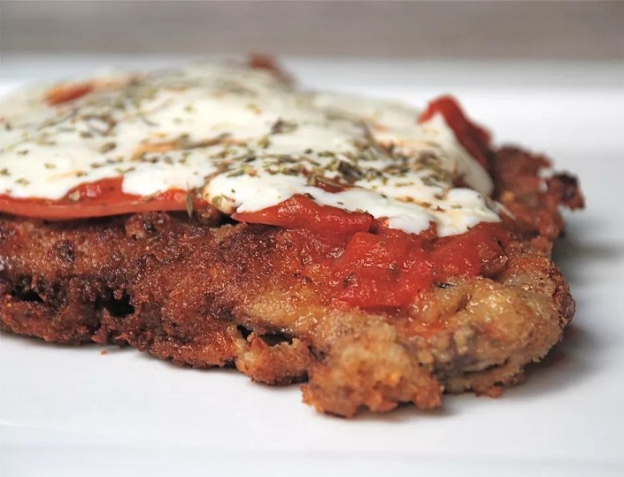

Argentinian Italian-Style Milanesa Napolitana

A classic from Argentine cuisine, a South American variation of an Italian dish:
Milanesa a la Napolitana. A delicious recipe for a crispy schnitzel with tomato
sauce, ham and melted cheese. Your knife glides through all layers, and you get
a flavor explosion with every bite. An easy recipe that you can put on the table
in 15 minutes!
Ingredients
- 4 thinly sliced skillet steaks, such as top round
- 3 eggs
- 1 teaspoon oregano
- Salt and pepper to taste
- 2 cups fresh bread crumbs
- 1/4 cup grated parmesan cheese
- 2 cloves garlic, finely minced
- 1/3 cup olive oil or vegetable oil
- 1/2 cup tomato sauce
- 4 sliced of deli ham
- 1 cup grated Mozzarella cheese
- 1 teaspoon Italian seasoning or oregano
Steps
- Gather the ingredients.
- Place eggs in a shallow bowl or pan, and whisk together with oregano and salt and pepper.
- Stir Parmesan cheese and garlic into bread crumbs and place in another shallow pan.
- Dip steaks first in egg mixture, then in bread crumbs, coating well with crumbs.
- Heat oil in a heavy skillet, and cook steaks for several minutes on each side, until golden
brown and crispy. Drain steaks on paper towels.
- Place steaks on a baking sheet. Turn on broiler.
- Top each steak with a slice of ham, 2 to 3 tablespoons tomato sauce, and 1/4 cup grated
mozzarella cheese. Sprinkle Italian seasoning over cheese, and place steaks under broiler until
cheese melts.
- Serve warm, with fries. Enjoy!
Back
Source